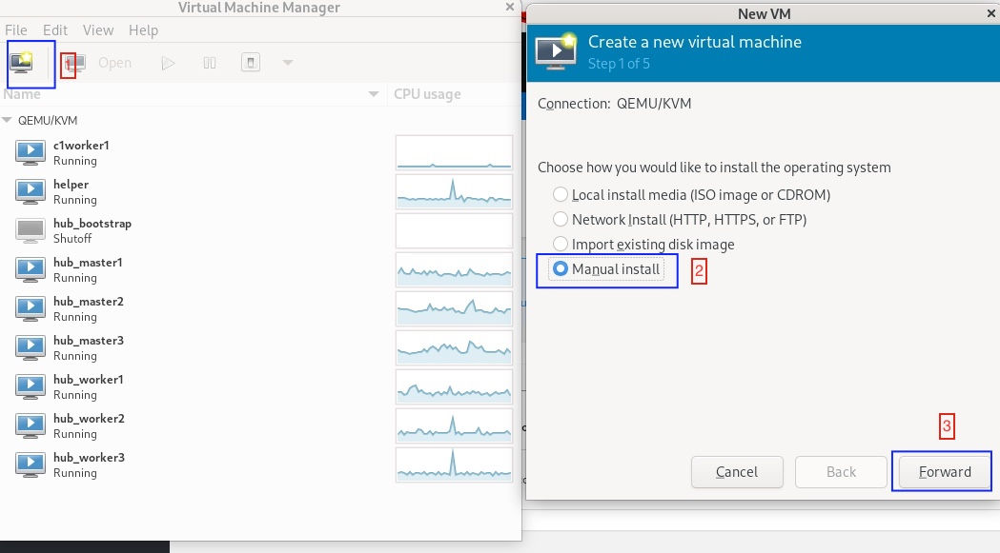
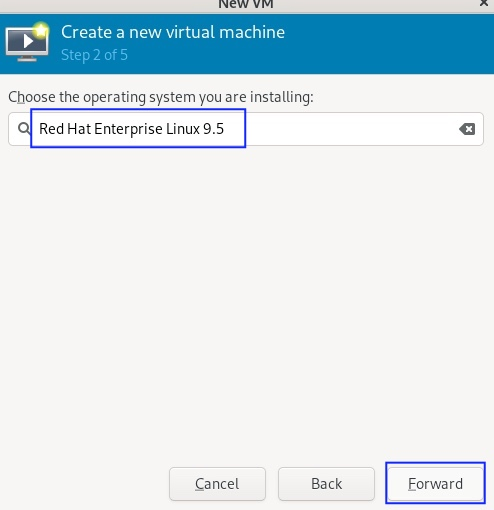
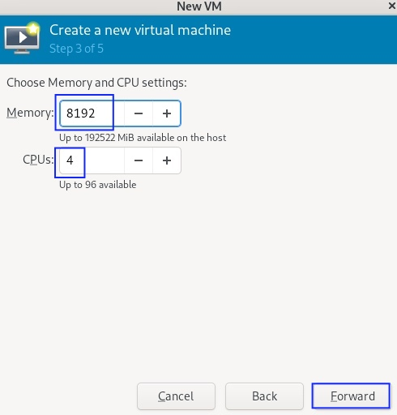
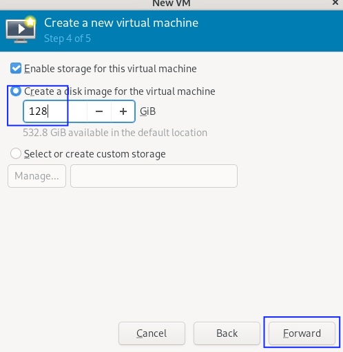
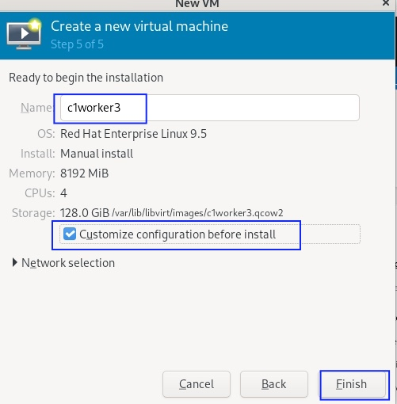
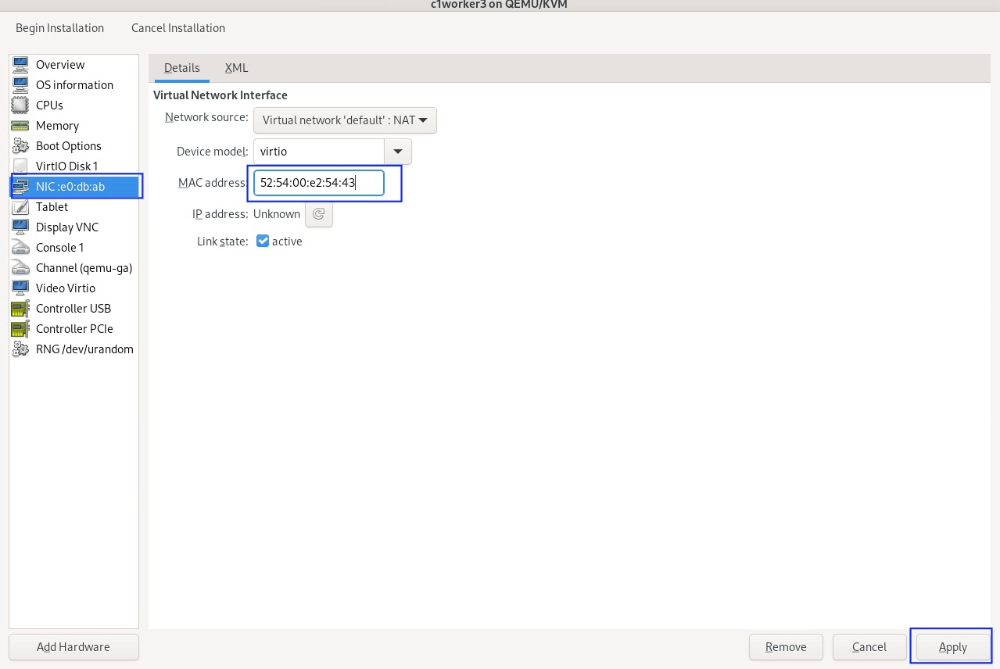
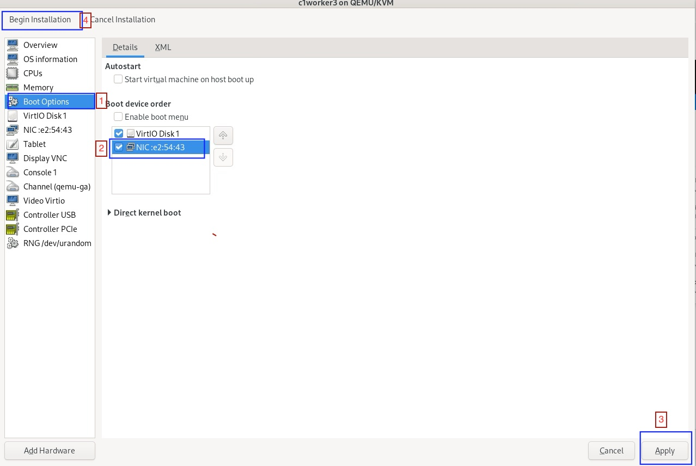
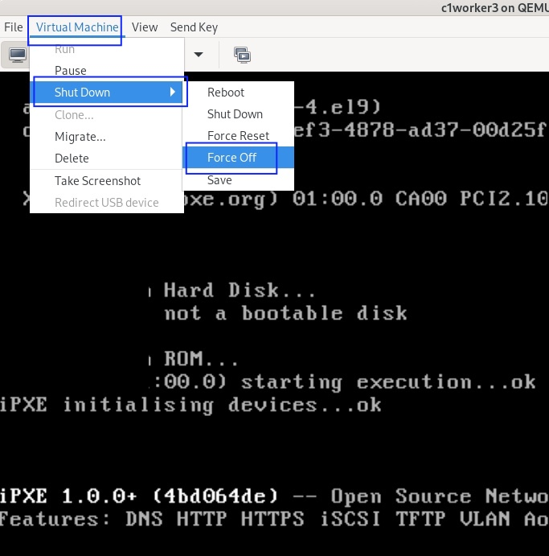
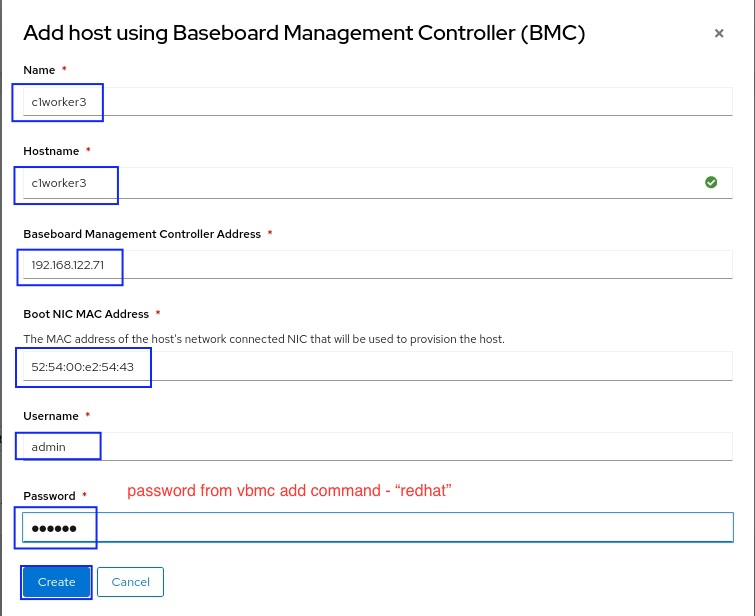

Optional: Configure Virtual BMC Services on the Bare Metal Host
This lab shows how to configure the bare metal host to provide a virtual Baseboard Management Controller (vBMC) and how to add such hosts to the ACM inventory using BMC, so that you can demonstrate the usage of managed servers as part of a hosted cluster.
The virtualbmc open source software enables managing libvirt VMs as if they were bare metal machines with IPMI controllers or similar management hardware. It enables testing of IPMI clients, such as the ipmitool command, and services such as OpenStack Ironic and the OpenShift Cluster Bare Metal operator.
Watch the following video and then follow the instructions in this section to perform the lab.
| If you have issues watching the video embedded in this page, watch it directly on the Red Hat media space, which requires the Red Hat VPN and an employee log in. |
-
Install vBMC, if not already installed by the playbooks from the previous lab.
# pip install virtualbmc -
Create a Systemctl service unit.
# vi /etc/systemd/system/vbmcd.service -
Copy and paste the following to the new unit.
[Install] WantedBy = multi-user.target [Service] BlockIOAccounting = True CPUAccounting = True ExecReload = /bin/kill -HUP $MAINPID ExecStart = /usr/local/bin/vbmcd --foreground Group = root MemoryAccounting = True PrivateDevices = False PrivateNetwork = False PrivateTmp = False PrivateUsers = False Restart = on-failure RestartSec = 2 Slice = vbmc.slice TasksAccounting = True TimeoutSec = 120 Type = simple User = root [Unit] After = libvirtd.service After = syslog.target After = network.target Description = vbmc service -
Enable the service unit.
# systemctl daemon-reload # systemctl enable vbmcd.service # systemctl start vbmcd.service # systemctl status vbmcd.service -
Create, but DO NOT boot, a VM to be managed by vBMC. Its settings should be similar to a VM that would boot using PXE.
-
Using the Virtual Machine Manager (
virt-manager) utility, create a new VM namedc1worker3, selecting Manual install. Configure the VM with at least 8GiB memory, 4vCPUS, and 128GB of disk. Be sure you check Customize configuration before install on Step 5 of 5. -
Set the NIC of the VM to a MAC address configured on the libvirt default network.
 -
Select Boot Options, keep the disk as the first boot device and add the NIC as the second boot device in the order. Then click Begin Installation.
This way, the VM boots from the NIC when the disk is empty, and boots from disk once CoreOS is installed. If you start with the NIC as first boot options, you must manually change the order later, after PXE boot, to boot from disk.
-
DO NOT let your new VM boot. Right after creating it, Virtual Machine > Shutdown > Force off to stop your VM. It will later be started by BMC.
 -
Alternatively, use the following commands to create the VM.
# qemu-img create -f qcow2 -o preallocation=metadata /var/lib/libvirt/images/c1worker3.qcow2 120G # virt-install --name c1worker3 \ --ram 8192 --vcpus 4 --os-variant rhel9.5 \ --disk path=/var/lib/libvirt/images/c1worker3.qcow2,device=disk,bus=virtio,format=qcow2 \ --network network:default,mac=52:54:00:e2:54:43 \ --noautoconsole --vnc --cpu host-passthrough \ --boot hd,network --print-xml > c1worker3.xml # virsh define c1worker3.xml
-
-
Add an ip address for vBMC to listen. It requires a unique IP address for each VM.
# ip addr add 192.168.122.71/32 dev virbr0 -
Associate the IP address with an your VM.
# /usr/local/bin/vbmc add c1worker3 --address 192.168.122.71 --username admin --password redhat -
Start the vbmc for that VM.
# /usr/local/bin/vbmc start c1worker3 -
Make sure that service is running for that vm.
# /usr/local/bin/vbmc list +-------------+---------+----------------+------+ | Domain name | Status | Address | Port | +-------------+---------+----------------+------+ | c1worker3 | running | 192.168.122.71 | 623 | +-------------+---------+----------------+------+ -
You may have to manually reboot the BMC managed node after correcting the boot order to boot from disk manually.
-
Create a provisioning resource using the following manifest.
apiVersion: metal3.io/v1alpha1 kind: Provisioning metadata: name: provisioning-configuration spec: provisioningNetwork: "Disabled" watchAllNamespaces: true -
Add a host using BMC.
-
Navigate to Infrastructure > Host Inventory, click on Add hosts and select With BMC form to configure BMC.
-
Fill in Name, Hostname, Baseboard Management Controller Address, Boot NIC MAC Address, username and password. Click Create.

-
-
Wait as vBMC boots the node and ACM adds it to the host inventory.
-
The node first will transition to "Registering" then to “Provisioning”.
-
The node will get automatically started by vbmc, boot to pxe and will become automatically available in host inventory. There is no need to approve a node created via vbmc.
-
The node is now ready to be added to any new cluster or to scale out existing clusters.
-